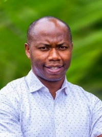

Solar and hybrid drying
Dryers that store heat in soapstone and granite, or switch to biogas after sunset, so crops keep drying through the night. Built with women farmer groups in Arusha and Kilimanjaro.
Associate Professor of Sustainable Energy Engineering, NM-AIST, Arusha
He designs solar dryers, cleaner fuels and heat pump systems so that African farmers, clinics and industries can run on energy they can afford, and trains the engineers who will build the next ones.

120+ peer-reviewed journal articles
$5M+ in research grants won as lead or co-lead
6 patents registered in Tanzania
48 MSc and PhD students supervised, from 6 countries
Before academia, Thomas worked as a service engineer and then head of the power division at Merrywater Ltd, installing power generators across Tanzania. His projects included the 4 MW synchronised plant at Golden Jubilee Towers in Dar es Salaam and the backup systems for new CRDB Bank branches. That habit of asking “will this actually run on site?” shapes all of his research.
He joined the Nelson Mandela African Institution of Science and Technology (NM-AIST) as a lecturer in 2015, became Associate Professor in 2023 and now directs the institution’s research and innovation. He founded the Clean Energy Technologies Research Group and the Sustainable Energy Lab, and coordinates the MSc and PhD programmes in Sustainable Energy Science and Engineering.
He is a registered Professional Engineer (ERB PE10185), an ARISE Fellow of the African Academy of Sciences, and an external examiner for five universities in Tanzania, Kenya and South Africa.
Most of the work starts with a problem seen in the field: tomatoes rotting after harvest, vaccines spoiling off the grid, diesel bills that farmers cannot pay.
Dryers that store heat in soapstone and granite, or switch to biogas after sunset, so crops keep drying through the night. Built with women farmer groups in Arusha and Kilimanjaro.
Biodiesel and bio-jet fuel from croton, water hyacinth, neem and agricultural waste, plus natural antioxidants that keep those fuels stable in storage.
Solar-assisted heat pump dryers, a solar-powered cooler that holds vaccines at minus 10 °C, and natural refrigerants such as propane.
Demand-side management, load forecasting and power quality for solar mini-grids, including Ngurudoto in Arusha and island systems in Zanzibar and Lake Victoria.
Gasification of rice husk and municipal waste, biogas from abattoir effluent and cow dung, and briquettes made from charcoal fines.
Why farmers do or do not adopt solar dryers, petroleum import demand, and leapfrogging pathways for East Africa’s energy transition.
Projects led as principal investigator or co-investigator, with funders including the European Union, the World Bank, the US National Academies, EPFL and the IAEA.
Principal investigator for NM-AIST (share: €206,938).
Principal investigator for NM-AIST (share: €75,815).
Principal investigator. Funds a UV-Vis spectrophotometer and a portable infrared syngas analyser for the lab.
Co-principal investigator with CNRS and Maasai Mara University. Studying how to bring 20 idle biogas digesters in Meru District back into use for cooking gas.
Principal investigator.
Principal investigator.
Lead consultant. Mapped the rice husk value chain, built business models for briquettes and bioenergy, and proposed how demonstration companies could scale up.
Lead consultant. Ran workshops for policymakers, regulators, private developers and banks on waste-to-energy technology and how to finance it.
Co-principal investigator with Tshwane University of Technology and Arusha Technical College. Built an affordable cooler that reaches minus 10 °C off the grid (patent TZ/P/2024/00096).
Principal investigator, with Purdue and Baylor universities. The dryer keeps working after sunset and is patented (TZ/P/2023/000088). One is installed at the TAHA centre in Tengeru, where the Mwambesi women’s group uses it.
Principal investigator, with Alpha Thermal Process LLC (USA). Produced patent TZ/P/2023/000093 and three journal articles.
Co-investigator. Developed a seaweed-based method that stops crops taking up fluoride from contaminated soil.
Principal investigator for NM-AIST on two mobility projects linking Tanzania with Germany and Hungary.
Principal investigator. Demonstrated the technology to more than 200 people in Arusha, Mafinga and Tabora.
Co-principal investigator. Created three accredited MSc programmes; Health Physics and Radiation Protection has enrolled students since 2021.
Head of research and innovation. Led the team that won German AQAS accreditation for the Materials Science and Engineering programmes, which brought $300,000 to the centre.
Co-principal investigator. Added smart grids as a specialty in the MSc and PhD programmes and set up what is now the Sustainable Energy Lab.
Each one registered with BRELA, Tanzania’s Business Registrations and Licensing Agency, and built to be made locally.
Cools and stores vaccines without a grid connection.
Dries crops by sun in the day and biogas at night.
A lower-carbon way to make Portland pozzolana cement.
Stores heat so drying continues when clouds pass.
Uses rock beds to keep drying after sunset.
A more efficient burner for household biogas stoves.
Tanzanian ministries and international agencies call on him for clean energy and innovation policy.
National Planning Commission study on business incubation and job creation in Tanzania.
Ministry of Agriculture expert team writing a national guideline for agricultural research and innovation.
Team leader reviewing the proposal for National Innovation Commercialisation Hubs (NICE-HUBS).
Tanzanian delegation to China on solar-assisted tobacco curing, with a feasibility report on pilot curing hubs.
Committee designing the Joint Universities Research and Innovation Basket Fund for Tanzania’s public universities.
Ministry of Education task force on a national incubation programme for gifted young engineers.
Team leader, e-cooking carbon credits pilot in Arusha with OffGridSun and Politecnico di Milano.
Community green economy incubation programme for IUCN Tanzania in Coast, Lindi and Unguja.
Clean energy expert preparing the Africa Energy Market Place 2024 in Tanzania for the African Development Bank.
Lead consultant comparing solar and diesel irrigation pumps in Kilimanjaro for TAHA.
Bio-digester and wetland for Mwanza City abattoir effluent, for LVEMP.
Testing a natural refrigerant in food transport refrigeration, with Transfrig and GIZ in South Africa.
He has taught at university level since 2013 in Tanzania and South Africa. At NM-AIST he teaches Renewable Energy Technology, Passive Solar Energy Technology, and Solar Energy Systems for Buildings and Cities.
His graduate students come from Tanzania, Uganda, Nigeria, the Republic of Congo, Zimbabwe and Mozambique. Several are co-inventors on the lab’s patents.
19 MSc students29 PhD students
“Energy challenges in Africa: innovative pathways and solutions”
Visiting professor, Politecnico di Milano, Italy, 2025
“The significance of solar dryers in addressing post-harvest losses for urban Africa’s food security”
5th Borobudur International Symposium, Indonesia, 2023
“The role of solar dryers in food security in urban Africa”
World Science Forum, Cape Town, 2022
“Solar–biogas hybrid dryer: an energy efficient and environmentally friendly technology”
ARISE high-level scientific event, Hammamet, Tunisia, 2024
Ministry of Education, Science and Technology, for publishing in high-impact journals.
Nelson Mandela African Institution of Science and Technology.
Nelson Mandela African Institution of Science and Technology.
Biofuels from water hyacinth at Baylor University, Texas.
Best master’s student at Tshwane University of Technology.
For research partnerships, consultancy, graduate supervision or speaking invitations.